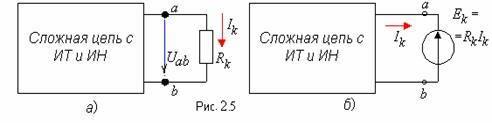

2.1.2.6.
Теорема компенсации
Согласно теореме компенсации токи в линейной или нелинейной электрической цепи не изменятся, если любой пассивный участок цепи заменить источником напряжения с ЭДС, равной по величине напряжению на данном участке и направленной навстречу току, проходящему по данному участку . Так, например, в сложной электрической цепи с источникаминапряжения (ИН) и источниками тока (ИТ) ветвь a и b с резистором Rkи током Ik(рис. 2.5, а ) заменена ИН с ЭДС Ek=RkIk(рис. 2.5, б ).
|